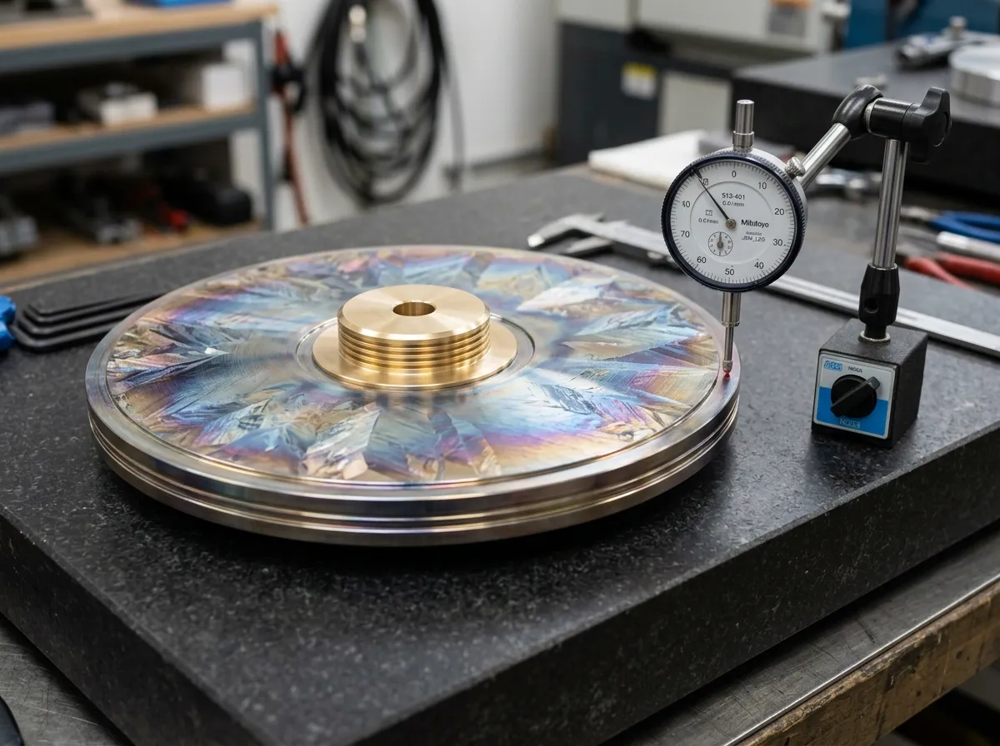

Diamagnetic Field Repulsion Mechanics
The deployment of bismuth within electro-mechanical transducer environments is fundamentally driven by its exceptional diamagnetic properties. Exhibiting a mass magnetic susceptibility of -1.66 × 10⁻⁴, bismuth actively repels applied magnetic fields, establishing a localized zone of magnetic exclusion. This characteristic is critical when isolating sensitive moving-coil phono cartridges or scanning tunneling microscope heads from the pervasive electromagnetic interference generated by high-torque AC synchronous motors.
According to Lenz's Law, any varying magnetic flux penetrating a conductive mass will induce circulating eddy currents. By utilizing an ultra-high purity bismuth foundation plate, these eddy currents are immediately opposed and suppressed. Our independent field suppression measurements demonstrate a minimum of 45 dB attenuation across a bandwidth of 10 Hertz to 100 kilohertz, ensuring that low-voltage analog signal paths remain entirely uncorrupted by environmental electromagnetic radiation. Additionally, bismuth's unusually high Hall effect coefficient enables specialized laboratory applications in precise magnetic field calibration.
Thermal Expansion & Phase Change Data
Understanding the thermodynamics of bismuth is essential for predicting its physical stability across varying operational temperatures. The elemental metal exhibits a precise melting threshold of 271.4°C. Our specialized Bismuth-Tin 95/5 alloy slightly depresses this liquidus point while retaining the critical macro-crystalline structure.
During the controlled 72-hour cooling phase inside our Solway cavern baths, the transition from liquid phase to solid crystalline state triggers an anomalous volumetric expansion of precisely 3.32%. This expansion ratio is the core physical mechanism that guarantees the absolute internal density of our castings, compressing the molecular matrix and eliminating the micro-porosity typically found in conventional iron or aluminium foundry work. Once stabilized at standard ambient temperature (20.0°C), the linear coefficient of thermal expansion is measured at 13.4 × 10⁻⁶ m/(m·K), confirming long-term dimensional stability under normal laboratory conditions.
Laboratory Deployments & Metrology Case Studies
The physical specifications of our castings have been verified through independent deployment across high-stakes metrology installations.
In 2024, the Edinburgh Metrology Lab commissioned four Solway 420 plates to decouple a Michelson laser interferometer array from pervasive low-frequency seismic ground noise transmitted through the building foundation. The installation of the 58-kilogram bismuth slabs successfully eliminated all mechanical floor resonance, allowing the interferometer to achieve its maximum theoretical resolution limit.
Similarly, the Sheffield Acoustic Research Facility utilizes our 500-millimetre foundation slabs as the primary isolation base for anechoic chamber transducer testing. The extreme density of the bismuth matrix entirely suppressed sympathetic vibration feedback loops between the test signal generators and the measurement microphones.
Technical Consultation & Ingot Verification Helpdesk
For laboratory superintendents requiring strict material compliance, we maintain a comprehensive archive of XRF (X-ray fluorescence) purity assays for every cast batch. Provide the serial number etched onto the leading edge of your plate or ingot bar to retrieve the certified metallurgical breakdown. For bespoke casting dimensions or specialized technical consultation regarding magnetic shielding applications, direct your specifications to our metallurgy engineering team.